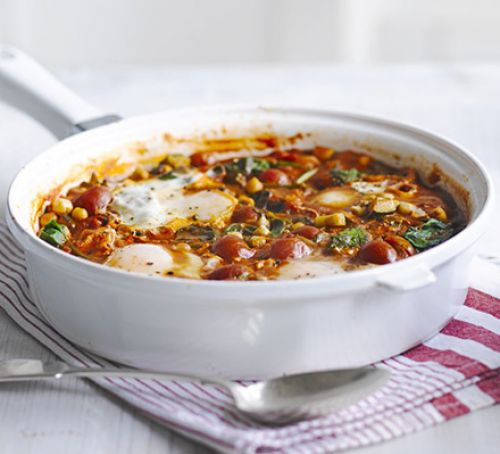

1. Heat the oil in a large, deep frying pan, and fry the onion and garlic for about 8 mins, stirring every now and then, until starting to turn golden. Add the harissa and ground coriander, stir well, then pour in the stock and chickpeas with their liquid. Cover and simmer for 5 mins, then mash about one-third of the chickpeas to thicken the stock a little.
2. Tip the tomatoes and courgettes into the pan, and cook gently for 10 mins until the courgettes are tender. Fold in the spinach so that it wilts into the pan.
3. Stir in the chopped coriander, then make 4 hollows in the mixture and break in the eggs. Cover and cook for 2 mins, then take off the heat and allow to settle for 2 mins before serving.